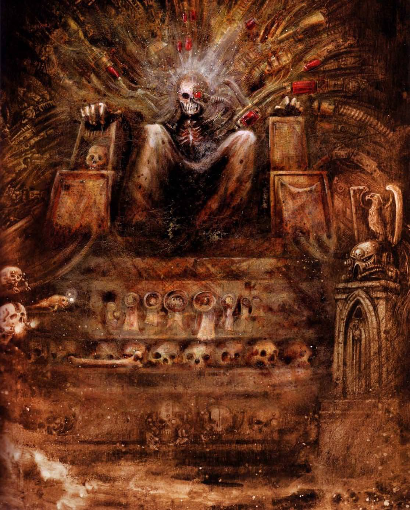

About John
John Blanche is a legendary British fantasy and science fiction illustrator and modeler. He is best known for his defining work on the Warhammer and Warhammer 40,000 universes for Games Workshop. His unique, gritty, and gothic art style created the visual foundation of the "grimdark" aesthetic. Without his visionary artwork, the far future of the 41st Millennium would not be the dark, gothic masterpiece it is today.
Key Contributions
- Defining the visual style of Warhammer 40,000 and Warhammer Fantasy Battles.
- Creating the iconic early illustrations of the Emperor of Mankind, Space Marines, and Sisters of Battle.
- Inspiring the "Blanchitsu" miniature painting style, known for its grim, realistic, and textured look.
- Serving as Art Director for Games Workshop for decades, shaping the creative direction of the entire company.
Important Events
- 1977 - Started working with Games Workshop, creating art for White Dwarf magazine.
- 1986 - Illustrated the iconic cover for the classic tabletop game Blood Bowl.
- 1987 - Contributed heavily to Warhammer 40,000: Rogue Trader, fundamentally shaping the sci-fi universe.
- 2023 - Officially retired from Games Workshop, leaving behind a massive, immortal legacy.